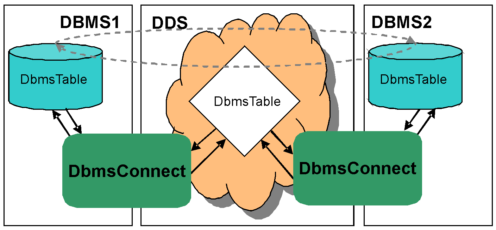

10. The DbmsConnect Service¶
The OpenSplice DbmsConnect Module is a pluggable service of OpenSplice that provides a seamless integration of the real-time DDS and the non-/near-real-time enterprise DBMS domains. It complements the advanced distributed information storage features of the OpenSplice Persistence Module (and vice versa*).*
Where (relational) databases play an essential role to maintain and deliver typically non- or near-real-time ‘enterprise’ information in mission systems, OpenSplice targets the real-time edge of the spectrum of distributing and delivering ‘the right information at the right place at the right time’ by providing a Quality-Of-Service (QoS)-aware ‘real-time information backbone’.
Changing expectations about the accessibility of information from remote/non-real-time information-stores and local/real-time sources lead to the challenge of lifting the boundaries between both domains. The DbmsConnect module of OpenSplice answers this challenge in the following ways:
- Transparently ‘connects’ the real-time DDS ‘information backbone’ to one or more ‘enterprise’ databases
- Allows both enterprise as well as embedded/real-time applications to access and share data in the most ‘natural’ way
- Allows OpenSplice to fault-tolerantly replicate enterprise information persisted in multiple relational databases in real-time
- Provides a pure ODBC/JDBC SQL interface towards real-time information via its transparent DbmsConnection
- Overcomes the lack of communication-control (QoS features controlling real-time behavior) of ‘talking’ to a remote DBMS
- Overcomes the lack of traditional 3GL and 4GL tools and features in processing information directly from a DDS backbone
- Allows for data-logging and analysis of real-time data persisted in a DBMS
- Aligns multiple and dispersed heterogeneous databases within a distributed system using the QoS-enabled data-distribution features of OpenSplice
The DbmsConnect module is unique in its dynamic configurability to achieve maximum performance:
- Dynamic DDS Partition/Topic selection and configurable content-filters to exchange exactly ‘the right’ information critical for performance and resource-challenged users
- Dynamic creation and mapping of DBMS database-tables and DDS topics to allow seamless data-exchange, even with legacy data models
- Selectable update-triggering per table/topic allowing for both real-time responsiveness as well as high-volume ‘batch transfers’
- Works with ANY third-party SQL:1999-compatible DBMS system with an ODBC interface
The DbmsConnect module thus effectively eliminates traditional ‘barriers’ of the standalone technologies by facilitating seamless data-exchange between any ODBC compliant (SQL)database and the OpenSplice real-time DDS ‘information-backbone’. Applications in traditionally separated mission-system domains can now exploit and leverage each other’s information in a highly efficient (based upon ‘current interest’ as supported by the publish/subscribe paradigm of DDS), non-disruptive (obeying the QoS demands as expressed for data-items in DDS) and distributed service-oriented paradigm.
OpenSplice DbmsConnect is based on SQL:1999 and utilizes ODBC 2.x to interface with third-party DBMS systems. Interoperability has been verified with MySQL 5.0 and Microsoft SQL Server 2008. With limited strict conformance of most RDBMS’s to both the SQL as well as the ODBC standard, support for other customer-chosen DBMS systems may require a porting activity of the DbmsConnect service.
As SQL tables have no support for unbounded sequences and sequences of complex types, mapping such DDS_Types to tables is not supported.
10.1. Usage¶
In order to understand the configuration and working of the DbmsConnect service, some basic concepts and use-cases will be covered here.
10.2. DDS and DBMS Concepts and Types Mapping¶
The concepts within DDS and DBMS are related to each other as listed in the table DDS to DBMS mapping: concepts.
| DDS | DBMS |
|---|---|
| Topic | Table |
| Type | Table structure |
| Instance | Primary key |
| Sample | Row |
| DataWriter.write() | INSERT or UPDATE |
| DataWriter.dispose() | DELETE |
The primitive types available in both domains map onto each other as listed in the table DDS to DBMS mapping: primitive types.
| DDS IDL type | DBMS column type (SQL:1999) |
|---|---|
| boolean | BOOLEAN/TINYINT |
| short | SMALLINT |
| unsigned short | SMALLINT |
| long | INTEGER |
| unsigned long | INTEGER |
| long long | BIGINT |
| unsigned long long | BIGINT |
| float | REAL |
| double | DOUBLE |
| octet | BINARY(1) |
| char | CHAR(1) |
| wchar | CHAR(1) |
| string<length> | VARCHAR(<length>) |
| wstring<length> | VARCHAR(<length>) |
The mapping of complex (composite) types is as follows:
- Struct - Flattened out - Each member maps to a column with fully scoped name
- Union - Flattened out - Additional #DISCRIMINATOR# column
- Enumeration - An INTEGER typed column with fully scoped name
- Array and bounded sequence - Flattened out - [index] appended to fully scoped column name
10.3. General DbmsConnect Concepts¶
The DbmsConnect service can bridge data from the DDS domain to the DBMS domain and vice versa. In DDS, data is represented by topics, while in DBMS data is represented by tables. With DbmsConnect, a mapping between a topic and a table can be defined.
Because not all topic-table mappings have to be defined explicitly (DbmsConnect can do matching when the names are the same), namespaces can be defined. A namespace specifies or limits the context of interest and allows for easy configuration of all mappings falling (or defined in) a namespace. The context of interest for bridging data from DDS to DBMS, consists of a partition- and topicname expression. When bridging data from DBMS to DDS, the context of interest consists of a table-name expression.
A mapping thus defines the relationship of a table in DBMS with a topic in DDS and can be used to explicitly map a topic and table with different names, or define settings for a specific mapping only.
10.4. DDS to DBMS Use Case¶
When data in the DDS domain has to be available in the DBMS domain, the DbmsConnect service can be configured to facilitate that functionality. A topic in DDS will be mapped to a table in DBMS.
10.4.1. DDS to DBMS Scenario¶
In the DDS domain, we have topics DbmsTopic and DbmsDdsTopic that we want to make available to a database application. The database application expects the data from topic DbmsTopic to be available in an existing table with name DbmsTable. Data from the DbmsDdsTopic topic can be just forwarded to a table (that does not yet exist) with the same name. This is shown in The DDS to DBMS scenario.
The DDS to DBMS scenario
{kind=link}
10.4.2. DDS to DBMS Configuration¶
The configuration for the DbmsConnect service that fulfils the needs of the scenario is given in the listing below.
1 ...
2 <DbmsConnectService name="dbmsconnect">
3 <DdsToDbms>
4 <NameSpace partition="*" topic="Dbms*"
5 dsn="DSN" usr="USR" pwd="PWD" odbc="ODBC">
6 <Mapping topic="DbmsTopic" table="DbmsTable"/>
7 </NameSpace>
8 </DdsToDbms>
9 </DbmsConnectService>
10 ...
10.4.2.1. DDS to DBMS Configuration Explanation¶
On line 3 a DdsToDbms element is specified in order to configure data bridging from DDS to DBMS. On line 4, a NameSpace is defined that has interest in all topics starting with “Dbms” in all partitions. Both the partition- and topic-expression make use of the *-wildcard (matching any sequence of characters). These wildcards match both topics described in the scenario, but will possibly match more. If the mapping should be explicitly limited to both topics, the topic-expression can be changed to DbmsTopic,DbmsDdsTopic.
The DbmsConnect service will implicitly map all matching topics to an equally named table in the DBMS. While this is exactly what we want for the DbmsDdsTopic, the database application expects the data from the DbmsTopic topic to be mapped to table DbmsTable. This is explicitly configured in the Mapping on line 6. If the tables already exist and the table-definition matches the topic definition, the service will use that table. If a table does not exist, it will be created by the service. If a table exists, but doesn’t match the topic definition, the mapping fails.
10.5. DBMS to DDS Use Case¶
When data in the DBMS domain has to become available in the DDS domain, this can be achieved by configuring the DbmsConnect service to map a table to a topic.
10.5.1. DBMS to DDS Scenario¶
In the DBMS, we have tables DbmsTable and DbmsDdsTopic that we want to make available in the dbmsPartition partition in DDS. The database application writes the data we want available in topic DbmsTopic to the table named DbmsTable. Data from the DbmsDdsTopic table can be just forwarded to the identically-named topic.
When the DbmsConnect service is started, mapped tables may already contain data. For the DbmsDdsTopic table, we are not interested in that data. For the DbmsTable table however, we would like all data available to the database application to be available to the DDS applications too. This scenario is the reverse (all arrows reversed) situation of the scenario shown in The DDS to DBMS scenario.
10.5.2. DBMS to DDS Configuration¶
The configuration for the DbmsConnect service that fulfils the needs of the scenario is given in the listing below.
11 ...
13 <DbmsConnectService name="dbmsconnect">
14 <DbmsToDds publish_initial_data="false">
15 <NameSpace partition="dbmsPartition" table="Dbms*"
16 dsn="DSN" usr="USR" pwd="PWD" odbc="ODBC">
17 <Mapping topic="DbmsTopic" table="DbmsTable"
18 publish_initial_data="true"/>
19 </NameSpace>
20 </DbmsToDds>
21 </DbmsConnectService
22 ...
10.5.2.1. DBMS to DDS Configuration Explanation¶
On line 13 a DdsToDbms element is specified in order to configure data bridging from DBMS to DDS. On line 14, a NameSpace is defined that has interest in all tables starting with “Dbms”. The table-expression makes use of the * wildcard (matching any sequence of characters). For this scenario, a single target partition is specified. If needed, a partition expression containing multiple partitions or wildcards can be used. For example when the DDS system is divided in two partitions (to support applications running in a ‘simulation’- and a ‘real’-world) and applications in both partition need access to the data from the DBMS.
The default setting for the publish_initial_data attribute is true. Because we only want initially available data to be published for the DbmsTable-DbmsTopic mapping, we define the default for all namespaces to be false on line 13. That setting will be inherited by all underlying elements, but can be overridden. The explicit Mapping specified on line 16 maps the table to the differently-named topic. On line 17, the publish_initial_data attribute is explicitly set to true, overriding that set at line 13.
10.6. Replication Use Case¶
A specific application of data bridging from DDS to DBMS and DBMS to DDS is replication of database (tables). Replication requires some specific configuration. The basic configuration is covered in this use case.
10.6.1. Replication Scenario¶
We have a two database servers running on different hosts. The table DbmsTable should be available on both database servers and changes should be sent both ways. This scenario is shown in The Replication scenario, where the dashed arrows show the transparent role of DDS in this scenario.
The Replication scenario
{kind=link}
10.6.2. Replication Configuration¶
The configuration for the DbmsConnect service for both hosts, that fulfils the needs of the scenario, is given in the listing below.
22 ...
23 <DbmsConnectService name="dbmsconnect">
24 <DdsToDbms replication_mode="true">
25 <NameSpace partition="replication" topic="DbmsTable"
26 dsn="DSN" usr="REPLUSR" pwd="PWD" odbc="ODBC">
27 </NameSpace>
28 </DdsToDbms>
29 <DbmsToDds replication_user="REPLUSR">
30 <NameSpace partition="replication" table="DbmsTable"
31 dsn="DSN" usr="USR" pwd="PWD" odbc="ODBC">
32 </NameSpace>
33 </DbmsToDds>
34 </DbmsConnectService
35 ...
10.6.2.1. Replication Configuration Explanation¶
The configuration for the replication scenario is symmetric in that it can be the same for both hosts. The basic idea is simple: configure a mapping from DDS to DBMS and from DBMS to DDS for the same table-topic pair within a partition (analogous to both the DDS to DBMS Use Case and the DBMS to DDS Use Case).
While this (intuitive) cyclic definition would work, more configuration is needed to support this use case properly. In order to prevent modifications from causing (cyclic) updates, the DbmsConnect service needs to be able to distinguish between data that is modified as part of a replication scenario and data that is changed by other sources.
For the DDS to DBMS mapping, replication data is identified by identification information of the sending node. The DdsToDbms part of the service is put to replication mode in line 24, which lets the service ignore all data transmitted by the node on which the service itself runs.
For the DBMS to DDS mapping, a special database user has to be used, that is only used by the DbmsConnect service, in order to be able to distinguish data from different sources. The database user that is used in the DdsToDbms mapping has to be excluded from update-cascading. This is specified on line 29 in the replication_user attribute. This means that all data that is inserted in the table by the user with the username specified in the replication_user attribute will be ignored. So the user specified at line 26 has to be the same as the user specified on line 29.